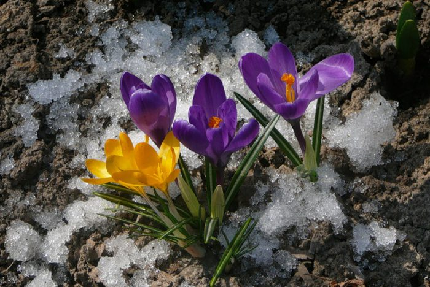

Багаторічні квіти
Крокуси

Розкриття таких ніжних квіточок відбувається разом з пролісками. Вони розпускаються на самому початку весни і виглядають дуже ефектно і свіжо. А щоб домогтися ще більшої ефектності, поруч можна посадити такі квіти різних забарвлень.